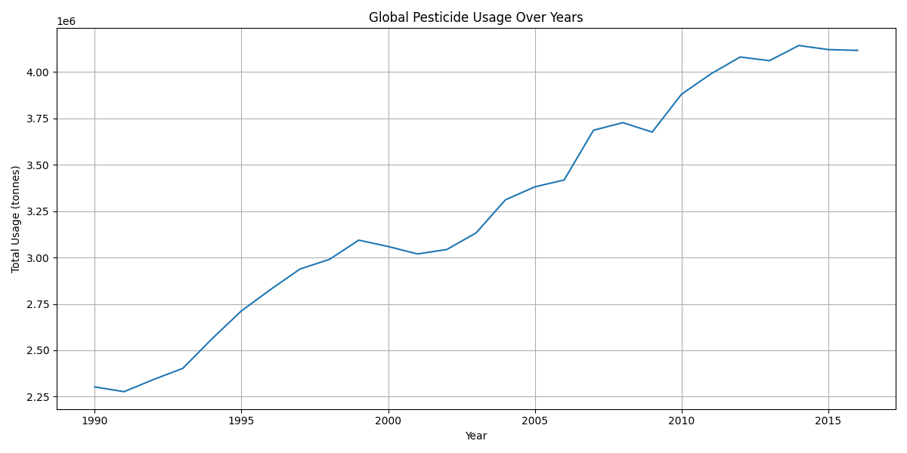

Analytics & Graphs
Interactive and static visualizations representing pesticide usage over time and across regions.
📈 Global Usage Over Years
🔥 Country-wise Heatmap

Interactive and static visualizations representing pesticide usage over time and across regions.